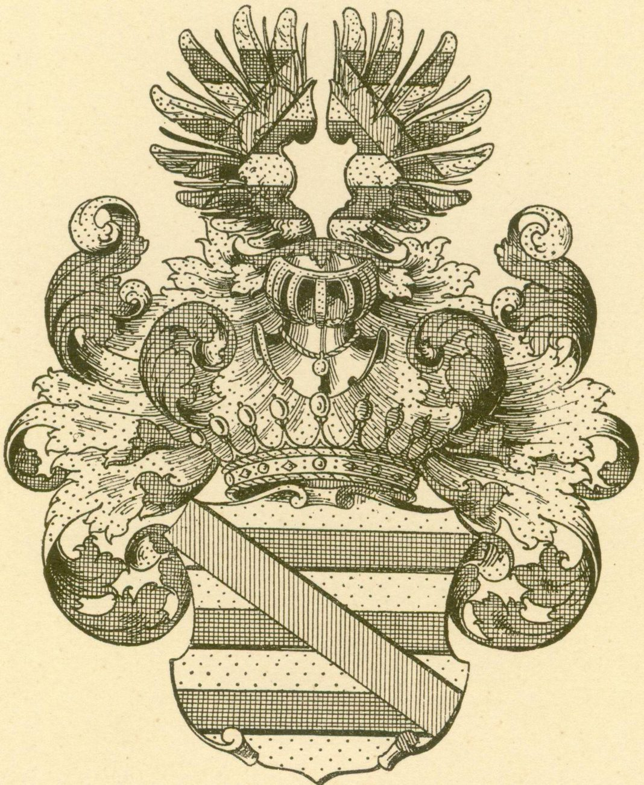

i
Звідки мапа
Рисунок атласу 1798 року для цієї місцевості поки не знайдено. Тому основою слугує детальна карта 1827 року: вона показує ту саму місцевість і добре узгоджується з описами кінця XVIII століття.
Дубровиця та навколишні містечка, села й фільварки наприкінці XVIII століття: хто ними володів, скільки було дворів і душ, де стояли церкви, млини й пристані на Горині.
Оберіть позначку на мапі або назву в списку — картка покаже власника, кількість дворів і мешканців за описом 1798 року.
Масштаб — коліщатко миші, два пальці або кнопки на мапі.
Усі записи «Економічних приміток», зведені за власниками. Натисніть назву поселення, щоб побачити його на мапі.
Суцільна рамка — поселення є на мапі; пунктирна — записане в «Примітках», але не потрапило на фрагменти аркушів. Дохід і оренда — річні суми в рублях, як їх подано в описі маєтку.

1750 — 1832 · граф, мальтійський командор
У «Економічних примітках» він записаний як «граф і кавалер Антоній Плятер». Дубровицю купив 1771 року в Міхала Бжостовського, а свою резиденцію збудував у фільварку Воробин — там мав велику бібліотеку і збірку творів мистецтва.
Посол на Великий сейм, прибічник Конституції 3 травня, кавалер орденів Святого Станіслава і Білого Орла. Похований у каплиці-гробівці на кладовищі в Дубровиці.
Із Дубровиці, Бережниці та Висоцька збіжжя пливло плоскодонними барками аж до Риги.
Рисунок атласу 1798 року для цієї місцевості поки не знайдено. Тому основою слугує детальна карта 1827 року: вона показує ту саму місцевість і добре узгоджується з описами кінця XVIII століття.
Власники, двори, мешканці за станами та описи маєтків узято з «Економічних приміток» 1798 року — текстового додатка до атласу. На мапі позначено лише поселення, які мають свій запис у «Примітках».
Назви подано так, як їх написано на карті, у тогочасній орфографії. «Рудня» трапляється в таблиці тричі — це різні, віддалені одне від одного села.